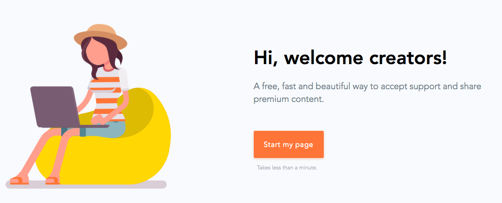
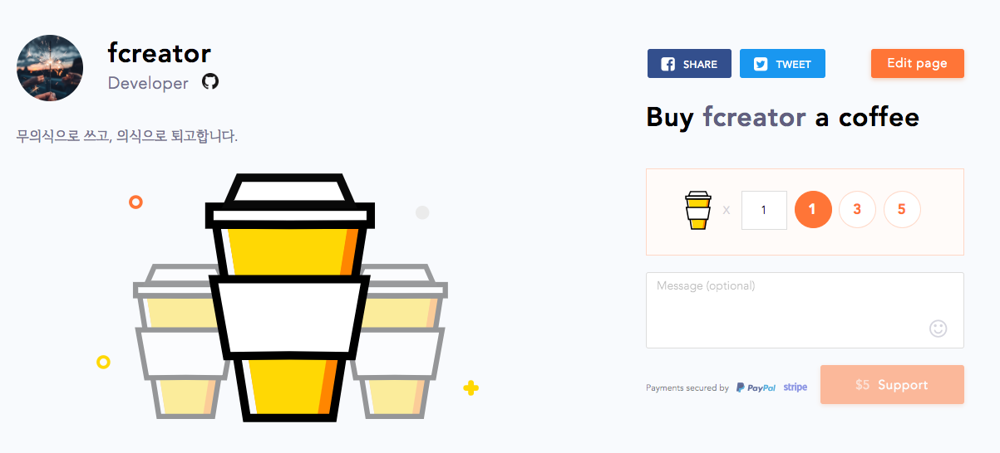
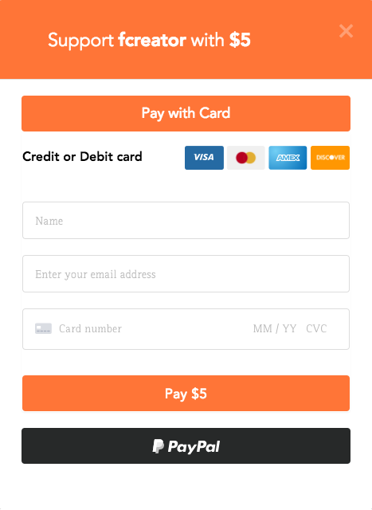
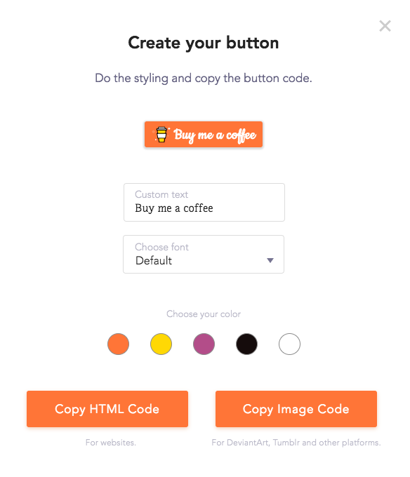

<!DOCTYPE html>
<html>

<head>
    <meta charset="utf-8">
    <meta name="naver-site-verification" content="5bca99e367b23b178c4d82aea38327d48a155f92">
    <link rel="stylesheet" href="https://cdn.rawgit.com/innks/NanumSquareRound/master/nanumsquareround.min.css">
    <link rel="stylesheet" href="//cdn.jsdelivr.net/font-iropke-batang/1.2/font-iropke-batang.css">
    <link rel="stylesheet" href="https://fonts.googleapis.com/css?family=Ubuntu:300,400">
    <link rel="stylesheet" href="https://fonts.googleapis.com/css?family=IBM+Plex+Mono">
    <link rel="stylesheet" href="https://fonts.googleapis.com/css?family=Cookie">
    
        <title>
            
                콘텐츠 제작자 후원의 새로운 방법 (BMC) |
                    
                        Writer, IT Blog
        </title>
        <meta name="viewport" content="width=device-width, initial-scale=1, maximum-scale=1">
        
            <meta name="keywords" content="bmc,buymeacoffee,support">
        

        
        <meta name="description" content="종종 외국의 프리웨어 프로그램을 사용하다보면, &apos;마음에 들면 커피 한 잔 사줘’라는 메시지를 종종 보곤 합니다. 아무래도 개발자들이 커피를 달고 사는 직업이다 보니, 후원 메시지를 커피 한 잔 사달라고 표현한 것입니다. 오픈소스 SW 라이선스 종류 중에는 &apos;맘대로 쓰고 맥주 한잔 사줘라’라는 뜻의 Beerware 도 있죠. 커피 한 잔 사주세요 이런 문화를">
<meta name="keywords" content="bmc,buymeacoffee,support">
<meta property="og:type" content="article">
<meta property="og:title" content="콘텐츠 제작자 후원의 새로운 방법 (BMC)">
<meta property="og:url" content="http://futurecreator.github.io/2018/07/07/buy-me-a-coffee/index.html">
<meta property="og:site_name" content="Writer, IT Blog">
<meta property="og:description" content="종종 외국의 프리웨어 프로그램을 사용하다보면, &apos;마음에 들면 커피 한 잔 사줘’라는 메시지를 종종 보곤 합니다. 아무래도 개발자들이 커피를 달고 사는 직업이다 보니, 후원 메시지를 커피 한 잔 사달라고 표현한 것입니다. 오픈소스 SW 라이선스 종류 중에는 &apos;맘대로 쓰고 맥주 한잔 사줘라’라는 뜻의 Beerware 도 있죠. 커피 한 잔 사주세요 이런 문화를">
<meta property="og:locale" content="en">
<meta property="og:image" content="http://futurecreator.github.io/2018/07/07/buy-me-a-coffee/2018/07/07/buy-me-a-coffee/bmc1.png">
<meta property="og:updated_time" content="2018-07-07T09:56:36.291Z">
<meta name="twitter:card" content="summary">
<meta name="twitter:title" content="콘텐츠 제작자 후원의 새로운 방법 (BMC)">
<meta name="twitter:description" content="종종 외국의 프리웨어 프로그램을 사용하다보면, &apos;마음에 들면 커피 한 잔 사줘’라는 메시지를 종종 보곤 합니다. 아무래도 개발자들이 커피를 달고 사는 직업이다 보니, 후원 메시지를 커피 한 잔 사달라고 표현한 것입니다. 오픈소스 SW 라이선스 종류 중에는 &apos;맘대로 쓰고 맥주 한잔 사줘라’라는 뜻의 Beerware 도 있죠. 커피 한 잔 사주세요 이런 문화를">
<meta name="twitter:image" content="http://futurecreator.github.io/2018/07/07/buy-me-a-coffee/2018/07/07/buy-me-a-coffee/bmc1.png">
<meta name="twitter:creator" content="@hdhXD">
<meta property="fb:admins" content="100001774570174">
<meta property="fb:app_id" content="1652051021784453">
        
        
        <link rel="canonical" href="http://futurecreator.github.io/2018/07/07/buy-me-a-coffee/">
        
        
            <link rel="icon" href="/images/favicions/favicon6.png">
        
        <link rel="stylesheet" href="/vendor/font-awesome/css/font-awesome.min.css">
        <!-- <link rel="stylesheet" href="/vendor/titillium-web/styles.css"> -->
        <!-- <link rel="stylesheet" href="/vendor/source-code-pro/styles.css"> -->
        <link rel="stylesheet" href="/css/style.css">
        <script src="/vendor/jquery/2.0.3/jquery.min.js"></script>
        
    
        <link rel="stylesheet" href="/vendor/fancybox/jquery.fancybox.css">
    
    
        <link rel="stylesheet" href="/vendor/scrollLoading/style.css">
    
    
        <script type="text/javascript">
(function(i,s,o,g,r,a,m) {i['GoogleAnalyticsObject']=r;i[r]=i[r]||function() {
(i[r].q=i[r].q||[]).push(arguments)},i[r].l=1*new Date();a=s.createElement(o),
m=s.getElementsByTagName(o)[0];a.async=1;a.src=g;m.parentNode.insertBefore(a,m)
})(window,document,'script','//www.google-analytics.com/analytics.js','ga');

ga('create', 'UA-79199094-2', 'auto');
ga('send', 'pageview');

</script>
    
    

        <script async src="//pagead2.googlesyndication.com/pagead/js/adsbygoogle.js"></script>
  <script>
    (adsbygoogle = window.adsbygoogle || []).push({
      google_ad_client: "ca-pub-2948714191026958",
      enable_page_level_ads: true
    });
  </script>

</head></html>
<body>
    <div id="wrap">
        <header id="header">
    <div id="header-outer" class="outer">
        <div class="container">
            <div class="container-inner">
                <div id="header-title">
                    <h1 class="logo-wrap">
                        <a href="/" class="logo"></a>
                    </h1>
                    
                        <h2 class="subtitle-wrap">
                            <p class="subtitle">
                                Eric Han&#39;s IT Blog Powered by Hexo
                            </p>
                        </h2>
                        
                </div>
                <div id="header-inner" class="nav-container">
                    <a id="main-nav-toggle" class="nav-icon fa fa-bars"></a>
                    <div class="nav-container-inner">
                        <ul id="main-nav">
                            
                                        <li class="main-nav-list-item">
                                            <a class="main-nav-list-link" href="/">
                                                Home
                                            </a>
                                        </li>
                                        
                                <ul class="main-nav-list"><li class="main-nav-list-item"><a class="main-nav-list-link" href="/categories/AWS/">AWS</a></li><li class="main-nav-list-item"><a class="main-nav-list-link" href="/categories/Column/">Column</a></li><li class="main-nav-list-item"><a class="main-nav-list-link" href="/categories/Hexo/">Hexo</a></li><li class="main-nav-list-item"><a class="main-nav-list-link" href="/categories/Programming/">Programming</a><ul class="main-nav-list-child"><li class="main-nav-list-item"><a class="main-nav-list-link" href="/categories/Programming/Algorithm/">Algorithm</a></li><li class="main-nav-list-item"><a class="main-nav-list-link" href="/categories/Programming/Apple/">Apple</a></li><li class="main-nav-list-item"><a class="main-nav-list-link" href="/categories/Programming/Java/">Java</a></li><li class="main-nav-list-item"><a class="main-nav-list-link" href="/categories/Programming/JavaScript/">JavaScript</a></li><li class="main-nav-list-item"><a class="main-nav-list-link" href="/categories/Programming/Vert-x/">Vert.x</a></li><li class="main-nav-list-item"><a class="main-nav-list-link" href="/categories/Programming/Web/">Web</a></li></ul></li><li class="main-nav-list-item"><a class="main-nav-list-link" href="/categories/Reviews/">Reviews</a></li></ul>
                                    
                                        <li class="main-nav-list-item">
                                            <a class="main-nav-list-link" href="/about">
                                                About
                                            </a>
                                        </li>
                                        
                        </ul>
                        <nav id="sub-nav">
                            <div id="search-form-wrap">

    <form class="search-form">
        <input type="text" class="ins-search-input search-form-input" placeholder="Search">
        <button type="submit" class="search-form-submit"></button>
    </form>
    <div class="ins-search">
    <div class="ins-search-mask"></div>
    <div class="ins-search-container">
        <div class="ins-input-wrapper">
            <input type="text" class="ins-search-input" placeholder="Type something...">
            <span class="ins-close ins-selectable"><i class="fa fa-times-circle"></i></span>
        </div>
        <div class="ins-section-wrapper">
            <div class="ins-section-container"></div>
        </div>
    </div>
</div>
<script>
(function (window) {
    var INSIGHT_CONFIG = {
        TRANSLATION: {
            POSTS: 'Posts',
            PAGES: 'Pages',
            CATEGORIES: 'Categories',
            TAGS: 'Tags',
            UNTITLED: '(Untitled)',
        },
        ROOT_URL: '/',
        CONTENT_URL: '/content.json',
    };
    window.INSIGHT_CONFIG = INSIGHT_CONFIG;
})(window);
</script>
<script src="/js/insight.js"></script>

</div>
                        </nav>
                    </div>
                </div>
            </div>
        </div>
    </div>
</header>
        <div class="container">
            <div class="main-body container-inner">
                <div class="main-body-inner">
                    <section id="main">
                        <div class="main-body-header">
    <h1 class="header">
    
    <a class="page-title-link" href="/categories/Reviews/">Reviews</a>
    </h1>
</div>
                        <div class="main-body-content">
                            <script async src="//pagead2.googlesyndication.com/pagead/js/adsbygoogle.js"></script>
<!-- 광고 -->
<ins class="adsbygoogle" style="display:block" data-ad-client="ca-pub-2948714191026958" data-ad-slot="8311183691" data-ad-format="auto"></ins>
<script>
(adsbygoogle = window.adsbygoogle || []).push({});
</script>

                            <article id="post-buy-me-a-coffee" class="article article-single article-type-post" itemscope="" itemprop="blogPost">
    <div class="article-inner">
        
            <header class="article-header">
                
    
        <h1 class="article-title" itemprop="name">
        콘텐츠 제작자 후원의 새로운 방법 (BMC)
        </h1>
    

            </header>
        
        <div class="article-subtitle">
            <a href="/2018/07/07/buy-me-a-coffee/" class="article-date">
    <time datetime="2018-07-07T09:53:06.000Z" itemprop="datePublished">2018-07-07</time>
</a>
            <!-- 
    <ul class="article-tag-list"><li class="article-tag-list-item"><a class="article-tag-list-link" href="/tags/bmc/">bmc</a></li><li class="article-tag-list-item"><a class="article-tag-list-link" href="/tags/buymeacoffee/">buymeacoffee</a></li><li class="article-tag-list-item"><a class="article-tag-list-link" href="/tags/support/">support</a></li></ul>
 -->
            <span class="reading-time">⏱ 7 분</span>
        </div>
        <div class="article-entry" itemprop="articleBody">
            <link rel="stylesheet" type="text/css" href="https://cdn.jsdelivr.net/hint.css/2.4.1/hint.min.css"><p>종종 외국의 프리웨어 프로그램을 사용하다보면, '마음에 들면 커피 한 잔 사줘’라는 메시지를 종종 보곤 합니다. 아무래도 개발자들이 커피를 달고 사는 직업이다 보니, 후원 메시지를 커피 한 잔 사달라고 표현한 것입니다. 오픈소스 SW 라이선스 종류 중에는 '맘대로 쓰고 맥주 한잔 사줘라’라는 뜻의 <a href="https://en.wikipedia.org/wiki/Beerware" rel="external nofollow noopener noreferrer" target="_blank">Beerware</a> 도 있죠.</p>
<h2 id="커피-한-잔-사주세요">커피 한 잔 사주세요</h2>
<p>이런 문화를 서비스화시킨 회사가 있습니다. 마음에 드는 서비스를 보고 커피를 한 두잔 살 정도의 돈을 후원하는 <a href="https://www.buymeacoffee.com/" rel="external nofollow noopener noreferrer" target="_blank">Buy me a coffee</a> 라는 서비스입니다.여러 아티스트, 디자이너, 작가, 개발자, 포토그래퍼 등 각종 직업을 가진 사람들이 쉽게 후원을 받을 수 있도록 도와줍니다.</p>
<p></p>
<p>해당 서비스를 이용하면 간단히 프로필을 만들고 버튼을 추가해서 후원받을 창구를 만들 수 있습니다. 단순히 돈을 받는 것이 아니라 커피 한 잔 사준다는 의미로 후원에 대한 부담을 줄일 수 있기도 합니다. 더 많은 후원자들에게 자신을 알릴 수 있고, 대시보드에서 페이지 뷰와 후원 현황을 확인할 수도 있습니다.</p>
<h2 id="시작하기">시작하기</h2>
<p>먼저 사이트에서 회원 가입하고 간단하게 자신의 프로필 페이지를 만듭니다. 자기소개나 간단한 자신의 스토리, 사진이나 동영상을 추가할 수 있습니다. 프로필을 만들고 해당 링크를 자신이 만든 사이트나 블로그에 추가하면 끝입니다.</p>
<p></p>
<p>사용자가 해당 페이지에서 커피 잔 수를 선택하고 바로 후원할 수 있습니다. 카드와 페이팔 중 선택해서 후원할 수 있습니다. 국내에선 페이팔을 잘 사용하지 않다보니 조금 아쉽습니다. 좀 더 다양한 옵션이 추가될 수 있겠네요. 국내 서비스라면 네이버, 카카오, 삼성페이 등도 있을 것 같고, 비트코인 등 암호화폐를 지원하는 것도 좋을 것 같습니다.</p>
<p></p>
<h2 id="버튼-만들기">버튼 만들기</h2>
<p>이제 사용자들이 내 프로필에 접근할 수 있도록 블로그에 버튼을 추가해보겠습니다. 버튼 추가도 간단합니다. Dashboard 페이지에서 <code>Create your button</code> 을 눌러 버튼을 생성합니다.</p>
<p></p>
<p>버튼에 표시되는 텍스트와 폰트를 선택하고 버튼의 색을 결정할 수 있습니다. 옵션이 많지는 않지만 HTML 코드로 생성하면 나중에 css 를 이용해서 변경할 수 있겠죠. 이미지 코드를 선택하면 생성한 이미지를 이용하는 간단한 링크를 만들어줍니다.</p>
<p>홈페이지에서 생성한 코드는 다음과 같습니다. 이제 원하는 위치에 붙여넣기만 하면 됩니다. 하지만 css 코드가 같이 있어서 굉장히 지저분합니다. 블로그에 좀 더 클린하게 적용해보겠습니다.</p>
<figure class="highlight html"><table><tr><td class="gutter"><pre><span class="line">1</span><br></pre></td><td class="code"><pre><span class="line"><span class="tag">&lt;<span class="name">style</span>&gt;</span><span class="undefined">.bmc-button img&#123;width: 27px !important;margin-bottom: 1px !important;box-shadow: none !important;border: none !important;vertical-align: middle !important;&#125;.bmc-button&#123;line-height: 36px !important;height:37px !important;text-decoration: none !important;display:inline-flex !important;color:#000000 !important;background-color:#FFDD00 !important;border-radius: 3px !important;border: 1px solid transparent !important;padding: 1px 9px !important;font-size: 23px !important;letter-spacing:0.6px !important;;box-shadow: 0px 1px 2px rgba(190, 190, 190, 0.5) !important;-webkit-box-shadow: 0px 1px 2px 2px rgba(190, 190, 190, 0.5) !important;margin: 0 auto !important;font-family:'Cookie', cursive !important;-webkit-box-sizing: border-box !important;box-sizing: border-box !important;-o-transition: 0.3s all linear !important;-webkit-transition: 0.3s all linear !important;-moz-transition: 0.3s all linear !important;-ms-transition: 0.3s all linear !important;transition: 0.3s all linear !important;&#125;.bmc-button:hover, .bmc-button:active, .bmc-button:focus &#123;-webkit-box-shadow: 0px 1px 2px 2px rgba(190, 190, 190, 0.5) !important;text-decoration: none !important;box-shadow: 0px 1px 2px 2px rgba(190, 190, 190, 0.5) !important;opacity: 0.85 !important;color:#000000 !important;&#125;</span><span class="tag">&lt;/<span class="name">style</span>&gt;</span><span class="tag">&lt;<span class="name">link</span> <span class="attr">href</span>=<span class="string">"https://fonts.googleapis.com/css?family=Cookie"</span> <span class="attr">rel</span>=<span class="string">"stylesheet"</span>&gt;</span><span class="tag">&lt;<span class="name">a</span> <span class="attr">class</span>=<span class="string">"bmc-button"</span> <span class="attr">target</span>=<span class="string">"_blank"</span> <span class="attr">href</span>=<span class="string">"https://www.buymeacoffee.com/fcreator"</span>&gt;</span><span class="tag">&lt;<span class="name">img</span> <span class="attr">src</span>=<span class="string">"https://www.buymeacoffee.com/assets/img/BMC-btn-logo.svg"</span> <span class="attr">alt</span>=<span class="string">"Buy me a coffee"</span>&gt;</span><span class="tag">&lt;<span class="name">span</span> <span class="attr">style</span>=<span class="string">"margin-left:5px"</span>&gt;</span>Buy me a coffee<span class="tag">&lt;/<span class="name">span</span>&gt;</span><span class="tag">&lt;/<span class="name">a</span>&gt;</span></span><br></pre></td></tr></table></figure>
<h2 id="블로그에-적용하기">블로그에 적용하기</h2>
<p>먼저 버튼을 만드는 <code>&lt;a&gt;</code> 태그를 원하는 곳으로 이동시킵니다. 저는 각 포스트 끝나는 부분과 공유버튼 + 댓글(Disqus) 사이에 위치시키기 위해서 <code>article.ejs</code> 를 수정했습니다. <code>&lt;footer&gt;</code> 태그 위에 위치시키는데 버튼을 가운데 정렬하기 위해서 <code>&lt;div&gt;</code> 태그로 감싸고 <code>align=&quot;center&quot;</code> 속성을 추가했습니다.</p>
<figure class="highlight html"><figcaption><span>article.ejs</span></figcaption><table><tr><td class="gutter"><pre><span class="line">1</span><br><span class="line">2</span><br><span class="line">3</span><br><span class="line">4</span><br><span class="line">5</span><br><span class="line">6</span><br></pre></td><td class="code"><pre><span class="line"><span class="tag">&lt;<span class="name">div</span> <span class="attr">id</span>=<span class="string">"bmc"</span> <span class="attr">align</span>=<span class="string">"center"</span>&gt;</span></span><br><span class="line">   <span class="tag">&lt;<span class="name">a</span> <span class="attr">class</span>=<span class="string">"bmc-button"</span> <span class="attr">target</span>=<span class="string">"_blank"</span> <span class="attr">href</span>=<span class="string">"https://www.buymeacoffee.com/fcreator"</span>&gt;</span></span><br><span class="line">      <span class="tag">&lt;<span class="name">img</span> <span class="attr">src</span>=<span class="string">"https://www.buymeacoffee.com/assets/img/BMC-btn-logo.svg"</span> <span class="attr">alt</span>=<span class="string">"Buy me a coffee"</span>&gt;</span></span><br><span class="line">      <span class="tag">&lt;<span class="name">span</span> <span class="attr">style</span>=<span class="string">"margin-left:5px"</span>&gt;</span>Buy me a coffee<span class="tag">&lt;/<span class="name">span</span>&gt;</span></span><br><span class="line">   <span class="tag">&lt;/<span class="name">a</span>&gt;</span></span><br><span class="line"><span class="tag">&lt;/<span class="name">div</span>&gt;</span></span><br></pre></td></tr></table></figure>
<p>그리고 버튼에서 사용하는 글꼴을 <code>&lt;header&gt;</code> 에 추가해줍니다. <code>head.ejs</code> 에 글꼴 링크를 추가합니다.</p>
<figure class="highlight html"><figcaption><span>head.ejs</span></figcaption><table><tr><td class="gutter"><pre><span class="line">1</span><br></pre></td><td class="code"><pre><span class="line"><span class="tag">&lt;<span class="name">link</span> <span class="attr">href</span>=<span class="string">"https://fonts.googleapis.com/css?family=Cookie"</span> <span class="attr">rel</span>=<span class="string">"stylesheet"</span>&gt;</span></span><br></pre></td></tr></table></figure>
<p>이제 스타일을 정리해보겠습니다. 테마 내 css 를 모아놓은 곳에 추가하면 됩니다. Hueman 테마를 기준으로 살펴보면 <code>(~theme)/source/_partial</code> 폴더에 Stylus 파일이 나뉘어져 있습니다. 여기에 <code>bmc.styl</code> 이라는 새로운 파일을 추가합니다. 그리고 메인 Stylus 파일인 <code>(~theme)/source/css/style.styl</code> 파일 맨 마지막에 다음과 같이 import 합니다.</p>
<figure class="highlight stylus"><figcaption><span>style.styl</span></figcaption><table><tr><td class="gutter"><pre><span class="line">1</span><br></pre></td><td class="code"><pre><span class="line">@import <span class="string">"_partial/bmc"</span></span><br></pre></td></tr></table></figure>
<p>기존 css 코드를 다음과 같이 Stylus 포맷으로 수정합니다. 아래 속성을 그대로 복사해 <code>bmc.styl</code> 파일을 만드시면 됩니다. Stylus 는 기존 css 를 보기 좋게 만든 것으로 <code>;</code>, <code>{ }</code> 를 적을 필요가 없고 중복되는 부분도 상당부분 제거하고 간단한 로직도 추가할 수 있는 포맷입니다. 자세한 문법은 <a href="http://stylus-lang.com/" rel="external nofollow noopener noreferrer" target="_blank">링크</a>를 참고하세요. 저는 추가로 하단 여백을 확보하기 위해서 마진을 추가했습니다. !important 속성은 적용 우선순위를 높여서 속성 강제적용하는 것인데 사실 여기서는 큰 의미가 없어서 일괄적으로 제거했습니다.</p>
<figure class="highlight stylus"><figcaption><span>bmc.styl</span></figcaption><table><tr><td class="gutter"><pre><span class="line">1</span><br><span class="line">2</span><br><span class="line">3</span><br><span class="line">4</span><br><span class="line">5</span><br><span class="line">6</span><br><span class="line">7</span><br><span class="line">8</span><br><span class="line">9</span><br><span class="line">10</span><br><span class="line">11</span><br><span class="line">12</span><br><span class="line">13</span><br><span class="line">14</span><br><span class="line">15</span><br><span class="line">16</span><br><span class="line">17</span><br><span class="line">18</span><br><span class="line">19</span><br><span class="line">20</span><br><span class="line">21</span><br><span class="line">22</span><br><span class="line">23</span><br><span class="line">24</span><br><span class="line">25</span><br><span class="line">26</span><br><span class="line">27</span><br><span class="line">28</span><br><span class="line">29</span><br><span class="line">30</span><br><span class="line">31</span><br><span class="line">32</span><br><span class="line">33</span><br><span class="line">34</span><br><span class="line">35</span><br><span class="line">36</span><br><span class="line">37</span><br><span class="line">38</span><br><span class="line">39</span><br><span class="line">40</span><br></pre></td><td class="code"><pre><span class="line">#bmc</span><br><span class="line">   <span class="attribute">margin-bottom</span>: <span class="number">50px</span></span><br><span class="line"></span><br><span class="line">.bmc-button</span><br><span class="line">   <span class="attribute">line-height</span>: <span class="number">36px</span></span><br><span class="line">   <span class="attribute">height</span>:<span class="number">37px</span></span><br><span class="line">   <span class="attribute">text-decoration</span>: none</span><br><span class="line">   <span class="attribute">display</span>:inline-flex</span><br><span class="line">   <span class="attribute">color</span>:<span class="number">#000000</span></span><br><span class="line">   <span class="attribute">background-color</span>:<span class="number">#FFDD00</span></span><br><span class="line">   <span class="attribute">border-radius</span>: <span class="number">3px</span></span><br><span class="line">   <span class="attribute">border</span>: <span class="number">1px</span> solid transparent</span><br><span class="line">   <span class="attribute">padding</span>: <span class="number">1px</span> <span class="number">9px</span></span><br><span class="line">   <span class="attribute">font-size</span>: <span class="number">23px</span></span><br><span class="line">   <span class="attribute">letter-spacing</span>:<span class="number">0.6px</span></span><br><span class="line">   <span class="attribute">box-shadow</span>: <span class="number">0px</span> <span class="number">1px</span> <span class="number">2px</span> rgba(<span class="number">190</span>, <span class="number">190</span>, <span class="number">190</span>, <span class="number">0.5</span>)</span><br><span class="line">   -webkit-<span class="attribute">box-shadow</span>: <span class="number">0px</span> <span class="number">1px</span> <span class="number">2px</span> <span class="number">2px</span> rgba(<span class="number">190</span>, <span class="number">190</span>, <span class="number">190</span>, <span class="number">0.5</span>)</span><br><span class="line">   <span class="attribute">margin</span>: <span class="number">0</span> auto</span><br><span class="line">   <span class="attribute">font-family</span>:<span class="string">'Cookie'</span>, cursive</span><br><span class="line">   -webkit-<span class="attribute">box-sizing</span>: border-box</span><br><span class="line">   <span class="attribute">box-sizing</span>: border-box</span><br><span class="line">   -o-<span class="attribute">transition</span>: <span class="number">0.3s</span> all linear</span><br><span class="line">   -webkit-<span class="attribute">transition</span>: <span class="number">0.3s</span> all linear</span><br><span class="line">   -moz-<span class="attribute">transition</span>: <span class="number">0.3s</span> all linear</span><br><span class="line">   -ms-<span class="attribute">transition</span>: <span class="number">0.3s</span> all linear</span><br><span class="line">   <span class="attribute">transition</span>: <span class="number">0.3s</span> all linear</span><br><span class="line">   img</span><br><span class="line">      <span class="attribute">width</span>: <span class="number">27px</span></span><br><span class="line">      <span class="attribute">margin-bottom</span>: <span class="number">1px</span></span><br><span class="line">      <span class="attribute">box-shadow</span>: none</span><br><span class="line">      <span class="attribute">border</span>: none</span><br><span class="line">      <span class="attribute">vertical-align</span>: middle</span><br><span class="line">   :hover</span><br><span class="line">   :active</span><br><span class="line">   :focus</span><br><span class="line">      -webkit-<span class="attribute">box-shadow</span>: <span class="number">0px</span> <span class="number">1px</span> <span class="number">2px</span> <span class="number">2px</span> rgba(<span class="number">190</span>, <span class="number">190</span>, <span class="number">190</span>, <span class="number">0.5</span>)</span><br><span class="line">      <span class="attribute">text-decoration</span>: none</span><br><span class="line">      <span class="attribute">box-shadow</span>: <span class="number">0px</span> <span class="number">1px</span> <span class="number">2px</span> <span class="number">2px</span> rgba(<span class="number">190</span>, <span class="number">190</span>, <span class="number">190</span>, <span class="number">0.5</span>)</span><br><span class="line">      <span class="attribute">opacity</span>: <span class="number">0.85</span></span><br><span class="line">      <span class="attribute">color</span>:<span class="number">#000000</span></span><br></pre></td></tr></table></figure>
<p>그럼 각 포스트마다 직접 추가할 필요 없이 자동으로 하단에 추가되는 것을 확인할 수 있습니다.</p>
<p>이번 포스트에서는 후원받을 수 있는 새로운 방법인 <a href="https://www.buymeacoffee.com/" rel="external nofollow noopener noreferrer" target="_blank">Buy me a coffee</a> 라는 서비스를 살펴봤습니다. 물론 이 버튼을 추가한다고 해서 후원받을 수 있는 것은 아니겠죠. 후원받을만한 좋은 콘텐츠를 꾸준하게 쌓는 것이 중요하겠습니다.</p>
<h2 id="related-posts">Related Posts</h2>
<ul>
<li>
<a href="/2018/06/12/program-for-eye-health-eyeleo-flux-stretchly/" title="소중한 내 눈을 위한 프로그램">소중한 내 눈을 위한 프로그램</a>
</li>
<li>
<a href="/2018/06/30/easy-diagram-plantuml-hexo-plugin/" title="쉽고 빠른 UML 그리기 (PlantUML)">쉽고 빠른 UML 그리기 (PlantUML)</a>
</li>
<li>
<a href="/2018/06/16/record-terminal-asciinema/" title="터미널을 보기 쉽게 녹화하기">터미널을 보기 쉽게 녹화하기</a></li>
</ul>

        </div>

        <div id="bmc" align="center">
            <a class="bmc-button" target="_blank" href="https://www.buymeacoffee.com/fcreator" rel="external nofollow noopener noreferrer"><span style="margin-left:5px">Buy me a coffee</span></a>
        </div>

        <script async src="//pagead2.googlesyndication.com/pagead/js/adsbygoogle.js"></script>
<!-- 광고 -->
<ins class="adsbygoogle" style="display:block" data-ad-client="ca-pub-2948714191026958" data-ad-slot="8311183691" data-ad-format="auto"></ins>
<script>
(adsbygoogle = window.adsbygoogle || []).push({});
</script>

        <footer class="article-footer">
            


    <div class="a2a_kit a2a_default_style">
    <a class="a2a_dd" href="https://www.addtoany.com/share" rel="external nofollow noopener noreferrer" target="_blank">Share</a>
    <span class="a2a_divider"></span>
    <a class="a2a_button_facebook"></a>
    <a class="a2a_button_twitter"></a>
    <a class="a2a_button_google_plus"></a>
    <a class="a2a_button_pinterest"></a>
    <a class="a2a_button_tumblr"></a>
</div>
<script type="text/javascript" src="//static.addtoany.com/menu/page.js"></script>
<style>
    .a2a_menu {
        border-radius: 4px;
    }
    .a2a_menu a {
        margin: 2px 0;
        font-size: 14px;
        line-height: 16px;
        border-radius: 4px;
        color: inherit !important;
        font-family: 'Microsoft Yahei';
    }
    #a2apage_dropdown {
        margin: 10px 0;
    }
    .a2a_mini_services {
        padding: 10px;
    }
    a.a2a_i,
    i.a2a_i {
        width: 122px;
        line-height: 16px;
    }
    a.a2a_i .a2a_svg,
    a.a2a_more .a2a_svg {
        width: 16px;
        height: 16px;
        line-height: 16px;
        vertical-align: top;
        background-size: 16px;
    }
    a.a2a_i {
        border: none !important;
    }
    a.a2a_menu_show_more_less {
        margin: 0;
        padding: 10px 0;
        line-height: 16px;
    }
    .a2a_mini_services:after{content:".";display:block;height:0;clear:both;visibility:hidden}
    .a2a_mini_services{*+height:1%;}
</style>


        </footer>
    </div>
</article>

    <section id="comments">
    
        
    <div id="disqus_thread">
        <noscript>Please enable JavaScript to view the <a href="//disqus.com/?ref_noscript">comments powered by Disqus.</a></noscript>
    </div>

    
    </section>


                        </div>
                    </section>
                    <aside id="sidebar">
    <a class="sidebar-toggle" title="Expand Sidebar"><i class="toggle icon"></i></a>
    <div class="sidebar-top">
        <p>follow:</p>
        <ul class="social-links">
            
                
                <li>
                    <a class="social-tooltip" title="linkedin-square" href="https://kr.linkedin.com/in/dongho-han-97465327" target="_blank" rel="external nofollow noopener noreferrer">
                        <i class="icon fa fa-linkedin-square"></i>
                    </a>
                </li>
                
            
                
                <li>
                    <a class="social-tooltip" title="twitter" href="https://twitter.com/hdhXD" target="_blank" rel="external nofollow noopener noreferrer">
                        <i class="icon fa fa-twitter"></i>
                    </a>
                </li>
                
            
                
                <li>
                    <a class="social-tooltip" title="medium" href="https://medium.com/@fcreator" target="_blank" rel="external nofollow noopener noreferrer">
                        <i class="icon fa fa-medium"></i>
                    </a>
                </li>
                
            
                
                <li>
                    <a class="social-tooltip" title="rss" href="/feed.xml" target="_blank">
                        <i class="icon fa fa-rss"></i>
                    </a>
                </li>
                
            
        </ul>
    </div>
    
        
<nav id="article-nav">
    
        <a href="/2018/07/07/hexo-change-font-face-no-cdn/" id="article-nav-newer" class="article-nav-link-wrap">
        <strong class="article-nav-caption">newer</strong>
        <p class="article-nav-title">
        
            일반 폰트를 웹에 적용하기
        
        </p>
        <i class="icon fa fa-chevron-right" id="icon-chevron-right"></i>
    </a>
    
    
        <a href="/2018/07/04/aws-certified/" id="article-nav-older" class="article-nav-link-wrap">
        <strong class="article-nav-caption">older</strong>
        <p class="article-nav-title">AWS 자격증 준비하기</p>
        <i class="icon fa fa-chevron-left" id="icon-chevron-left"></i>
        </a>
    
</nav>

    
    <div class="widgets-container">
        
            
                
    <div class="widget-wrap widget-list">
        <h3 class="widget-title">links</h3>
        <div class="widget">
            <ul>
                
                    <li>
                        <a href="http://fc-yume.com/" rel="external nofollow noopener noreferrer" target="_blank">yume</a>
                    </li>
                
                    <li>
                        <a href="http://fc-kasa.com/" rel="external nofollow noopener noreferrer" target="_blank">kasa</a>
                    </li>
                
                    <li>
                        <a href="http://fc-jam-dump.com/" rel="external nofollow noopener noreferrer" target="_blank">dump</a>
                    </li>
                
                    <li>
                        <a href="https://hexo.io/" rel="external nofollow noopener noreferrer" target="_blank">Hexo.io</a>
                    </li>
                
                    <li>
                        <a href="https://www.buymeacoffee.com/fcreator" rel="external nofollow noopener noreferrer" target="_blank">블로거 후원하기</a>
                    </li>
                
            </ul>
        </div>
    </div>


            
                
    <div class="widget-wrap widget-list">
        <h3 class="widget-title">archives</h3>
        <div class="widget">
            <ul class="archive-list"><li class="archive-list-item"><a class="archive-list-link" href="/archives/2018/08/">August 2018</a><span class="archive-list-count">9</span></li><li class="archive-list-item"><a class="archive-list-link" href="/archives/2018/07/">July 2018</a><span class="archive-list-count">12</span></li><li class="archive-list-item"><a class="archive-list-link" href="/archives/2018/06/">June 2018</a><span class="archive-list-count">19</span></li><li class="archive-list-item"><a class="archive-list-link" href="/archives/2018/05/">May 2018</a><span class="archive-list-count">4</span></li><li class="archive-list-item"><a class="archive-list-link" href="/archives/2017/01/">January 2017</a><span class="archive-list-count">5</span></li><li class="archive-list-item"><a class="archive-list-link" href="/archives/2016/07/">July 2016</a><span class="archive-list-count">1</span></li><li class="archive-list-item"><a class="archive-list-link" href="/archives/2016/06/">June 2016</a><span class="archive-list-count">19</span></li></ul>
        </div>
    </div>


            
        
    </div>
    <script async src="//pagead2.googlesyndication.com/pagead/js/adsbygoogle.js"></script>
<!-- Skycrapper -->
<ins class="adsbygoogle" style="display:inline-block;width:300px;height:600px" data-ad-client="ca-pub-2948714191026958" data-ad-slot="8126053690"></ins>
<script>
(adsbygoogle = window.adsbygoogle || []).push({});
</script>

</aside>

                </div>
            </div>
        </div>
        <footer id="footer">
    <div class="container">
        <div class="container-inner">
            <a id="back-to-top" href="javascript:;"><i class="icon fa fa-angle-up"></i></a>
            <div class="credit">
                <h1 class="logo-wrap">
                    <a href="/" class="logo"></a>
                </h1>
                <!--  -->
                <p>&copy; 2018 Eric Han</p>
                <p>Powered by <a href="//hexo.io/" target="_blank">Hexo</a>. Theme by <a href="//github.com/ppoffice" target="_blank">PPOffice</a></p>
            </div>
        </div>
    </div>
</footer>

        
    
    <script>
    var disqus_shortname = 'futurecreator';
    
    
    var disqus_url = 'http://futurecreator.github.io/2018/07/07/buy-me-a-coffee/';
    
    (function() {
    var dsq = document.createElement('script');
    dsq.type = 'text/javascript';
    dsq.async = true;
    dsq.src = '//' + disqus_shortname + '.disqus.com/embed.js';
    (document.getElementsByTagName('head')[0] || document.getElementsByTagName('body')[0]).appendChild(dsq);
    })();
    </script>


    
        <script src="/vendor/fancybox/jquery.fancybox.pack.js"></script>
    

    
        <script src="/vendor/scrollLoading/jquery.scrollLoading.js"></script>
        <script src="/vendor/scrollLoading/main.js"></script>
    


<!-- Custom Scripts -->
<script src="/js/main.js"></script>

    </div>
</body>

